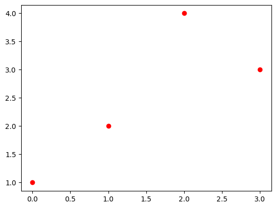
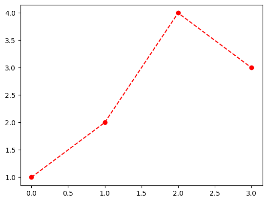

flowchart LR
A[Hard edge] --> B(Round edge)
B --> C{Decision}
C --> D[Result1]
C --> E[Result2]
Qslides
강정혁
2025-01-02
What is Quarto?
About Quarto
Official website: https://quarto.org/
Quarto is an open-source scientific and technical publishing system built on Pandoc.
- Publish high-quality articles, reports, presentations, websites, blogs, and books in HTML, PDF, MS Word, ePub, and more.
- Author with scientific markdown, including equations, citations, crossrefs, figure panels, callouts, advanced layout, and more.
Why should we use quarto?
Equations (1)
- \(x, y, z\)
- \(x_1,x_2,x_3\)
- \(x^2, x^3, x^4\)
- \(\alpha, \beta, \gamma, \delta, \epsilon\)
- \(\frac{1}{2}, \frac{1}{3}, \frac{2}{3}, \dots\)
- \(\frac{1}{\sqrt{2\pi}} e^{-\frac{1}{2}x^2}\)
- \(X_1, X_2, \dots, X_n \overset{i.i.d.}{\sim} N(0,1)\)
- \(\frac{X_1+\dots+X_n}{n} \overset{p}{\to} \mu\)
Equations (2)
- \({\boldsymbol a}, {\bf a}, {\boldsymbol B}, {\bf B}, {\boldsymbol \alpha}, {\boldsymbol \Omega}, \dots\)
- \(\mathbb{R}, \mathbb{Z}, \mathbb{R}^2, \dots\)
- \({\bf A}^{-1}, {\bf A}^{\top}, {\bf A}^t, \dots\)
- \({\boldsymbol y} = {\bf X}{\boldsymbol \beta} + {\boldsymbol \epsilon}, \quad {\boldsymbol \epsilon} \sim N({\bf 0}, {\bf I})\)
- \(\underset{x}{\operatorname{min}}f(x)\), \(\underset{x}{\operatorname{argmin}}f(x)\)
- \(\begin{cases} x+y = 1 \\ x-y = 1\end{cases}\)
Tables (1)
| Default | Left | Right | Center |
|---|---|---|---|
| 12 | 12 | 12 | 12 |
| 123 | 123 | 123 | 123 |
| 1 | 1 | 1 | 1 |
Tables (2)
| Col1 | Col2 | Col3 |
|---|---|---|
| A | B | C |
| E | F | G |
| A | G | G |
| Col1 | Col2 | Col3 |
|---|---|---|
| A | B | C |
| E | F | G |
| A | G | G |
Main Caption
Diagrams (1)
Diagrams (2)
sequenceDiagram
participant Alice
participant Bob
Alice->>John: Hello John, how are you?
loop Healthcheck
John->>John: Fight against hypochondria
end
Note right of John: Rational thoughts <br/>prevail!
John-->>Alice: Great!
John->>Bob: How about you?
Bob-->>John: Jolly good!
Diagrams (3)
Footnotes
Here is an inline note.1
Citation
codes in quarto
- Blah Blah [@chandola2009anomaly; @bronstein2017geometric].
- Chandola says blah [-@chandola2009anomaly]output
Blah Blah (Chandola, Banerjee, and Kumar 2009; Bronstein et al. 2017).
Chandola says blah (2009)
Bibliography Generation
codes in quarto
::: {#refs}
:::output
Bronstein, Michael M, Joan Bruna, Yann LeCun, Arthur Szlam, and Pierre Vandergheynst. 2017. “Geometric Deep Learning: Going Beyond Euclidean Data.” IEEE Signal Processing Magazine 34 (4): 18–42.
Chandola, Varun, Arindam Banerjee, and Vipin Kumar. 2009. “Anomaly Detection: A Survey.” ACM Computing Surveys (CSUR) 41 (3): 1–58.
Tabsets
Figures (1)

Figures (2)
#| layout-ncol: 2
#| fig-cap:
#| - "Fig1: Scatter Plot"
#| - "Fig2: Dot-connected Plot"
import matplotlib.pyplot as plt
plt.plot([1,2,4,3],'ro'); plt.show()
plt.plot([1,2,4,3],'--ro'); plt.show()

Outputs
Presentations: beamer, powerpoint.
Websites: DV2023, DV2023-DASH.
Books: Hands-On Programming with R, Python for Data Analysis, 3E.